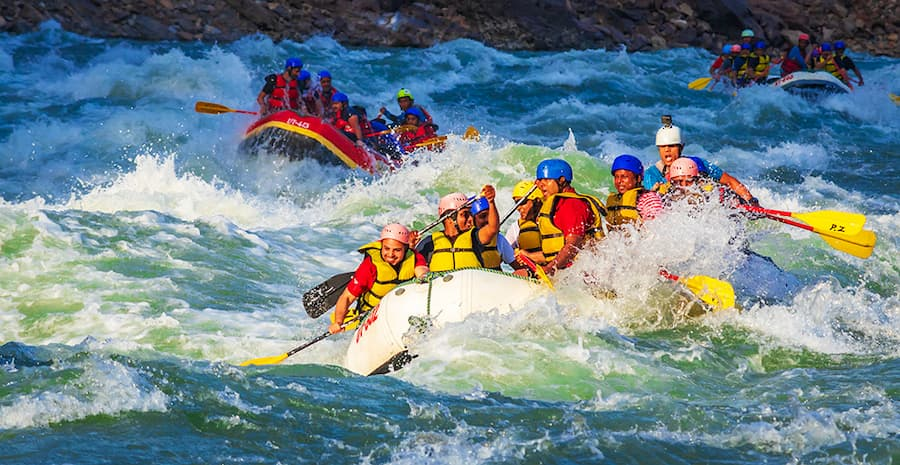

We live for the roar of the river and the spark of adventure. Our mission is to share the thrill of white water with every traveler, creating memories that last a lifetime. Safety, fun, and respect for nature are at our core.

River Rush Expeditions
History
Founded in 22DC by a group of river guides with a passion for untamed waters, River Rush began with a single raft and a dream. Over the years, we've navigated the most challenging rapids across the globe, from the Colorado to the Futaleufú.